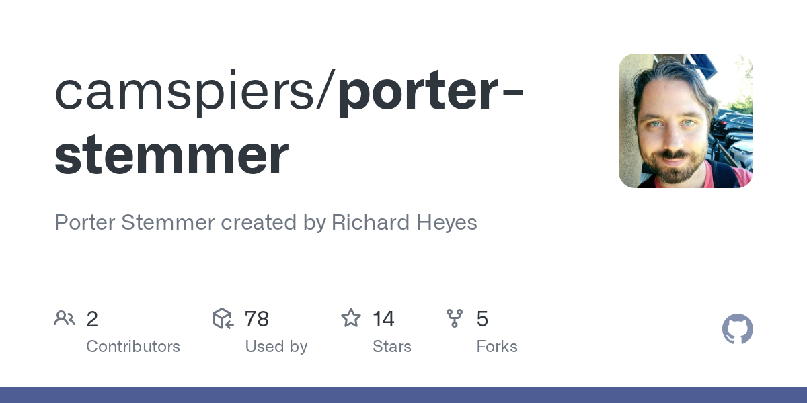

3.2. Stemming and Lemmatization
Natural language contains many forms of words (e.g., run, running, ran, runs), and reducing them to a common representation is crucial for text analysis. Two fundamental approaches exist: stemming and lemmatization.
Stemming applies heuristic rules to truncate words
Lemmatization uses vocabulary and morphological analysis to return the base or dictionary form (lemma).
Both methods aim to normalize text, though they differ in precision, computational cost, and linguistic awareness.
3.2.1. Historical Approaches to Stemming
The earliest stemming algorithms were rule-based and heuristic, designed for information retrieval in the 1960s–1980s. The most influential is Porter's stemmer (Porter, 1980), which reduces words by stripping suffixes with handcrafted rules. For example, "connect", "connected", "connecting" all reduce to "connect". However, such methods are prone to errors, as they may cut words incorrectly ("relational" → "relat").

Below there is an example of Porter’s stemmer in Python:
from nltk.stem import PorterStemmer
ps = PorterStemmer()
words = ["connection", "connected", "connecting", "relational", "cats"]
[ps.stem(w) for w in words]# Output: [‘connect’, ‘connect’, ‘connect’, ‘relat’, ‘cat’]
This approach is fast and lightweight, but it ignores deeper linguistic structure.
3.2.2. Historical Approaches to Lemmatization
Lemmatization historically required lexicons and morphological analysis, making it computationally heavier than stemming. For example, the WordNet lemmatizer (Fellbaum, 1998) uses part-of-speech (POS) information to map "running" → "run" or "better" → "good". Unlike stemming, lemmatization ensures that the result is a valid dictionary word.
Example in Python (WordNet Lemmatizer):
from nltk.stem import WordNetLemmatizer
from nltk.corpus import wordnet
lemmatizer = WordNetLemmatizer()
words = [("running", 'v'), ("better", 'a'), ("cats", 'n')]
[lemmatizer.lemmatize(w, pos=p) for w, p in words]# Output: [‘run’, ‘good’, ‘cat’]
3.2.3. Modern Approaches
With the rise of machine learning and deep learning, modern lemmatization and stemming methods increasingly rely on statistical or neural models. Tools like spaCy or Stanza perform lemmatization by using pre-trained models that capture both morphology and context. For instance, spaCy can distinguish whether "saw" refers to the verb (see) or the noun (saw as a tool).
Example in Python (spaCy):
import spacy
nlp = spacy.load("en_core_web_sm")
doc = nlp("The children are running with saws in their hands")
[(token.text, token.lemma_) for token in doc]- Output: [(‘The’, ‘the’), (‘children’, ‘child’), - (‘are’, ‘be’), (‘running’, ‘run’),
- (‘with’, ‘with’), (‘saws’, ‘saw’),
- (‘in’, ‘in’), (‘their’, ‘their’), (‘hands’, ‘hand’)]
3.2.4. Comparison of Stemming and Lemmatization
| Feature | Stemming | Lemmatization |
|---|---|---|
| Basis | Heuristic rules, truncation | Vocabulary, morphology, POS analysis |
| Output | May not be a valid word | Always valid dictionary word |
| Speed | Very fast | Slower, more computationally expensive |
| Accuracy | Lower, may over-truncate | Higher, preserves semantics |
| Example ("relational") | "relat" | "relational" |
In modern NLP pipelines, lemmatization is preferred when semantic precision is required (e.g., machine translation, sentiment analysis), whereas stemming suffices for tasks like search indexing or clustering where speed matters more than linguistic accuracy.